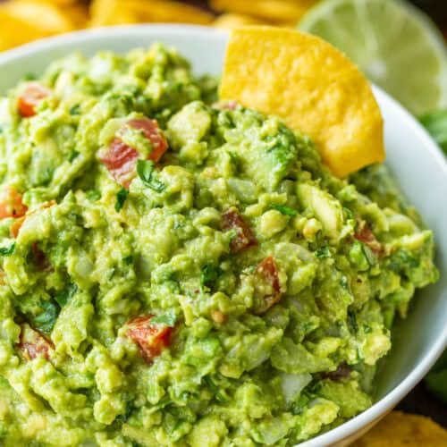

Guacamole Recipe

Description
This guacamole features fresh ingredients that work together to make a
great snack for home or parties!
Ingredients
- 4 ripe avocados
- 1 red onion
- 1 bunch cilantro
- 4 limes
- Salt and pepper to taste
Steps
-
Halve avocados, remove pits, and cut interior in a grid pattern. Use a
spoon to scoop avocado contents into bowl.
- Finely dice red onion and add to avocado.
- Chop cilantro and add to ingredients.
- Halve limes and squeeze juice into bowl.
- Salt and pepper to taste.
- Enjoy!